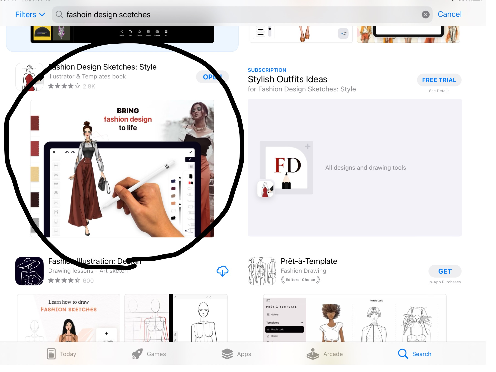
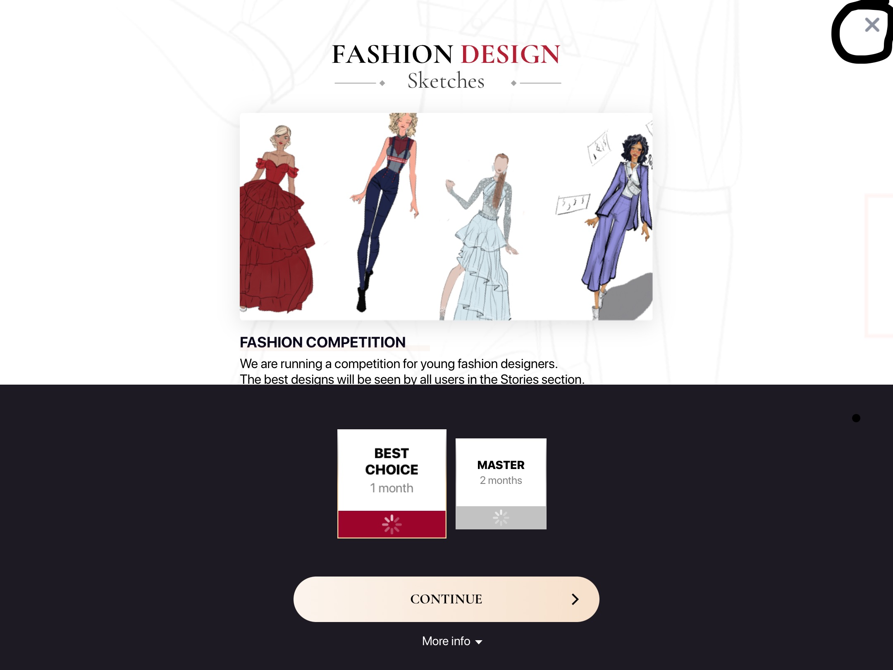
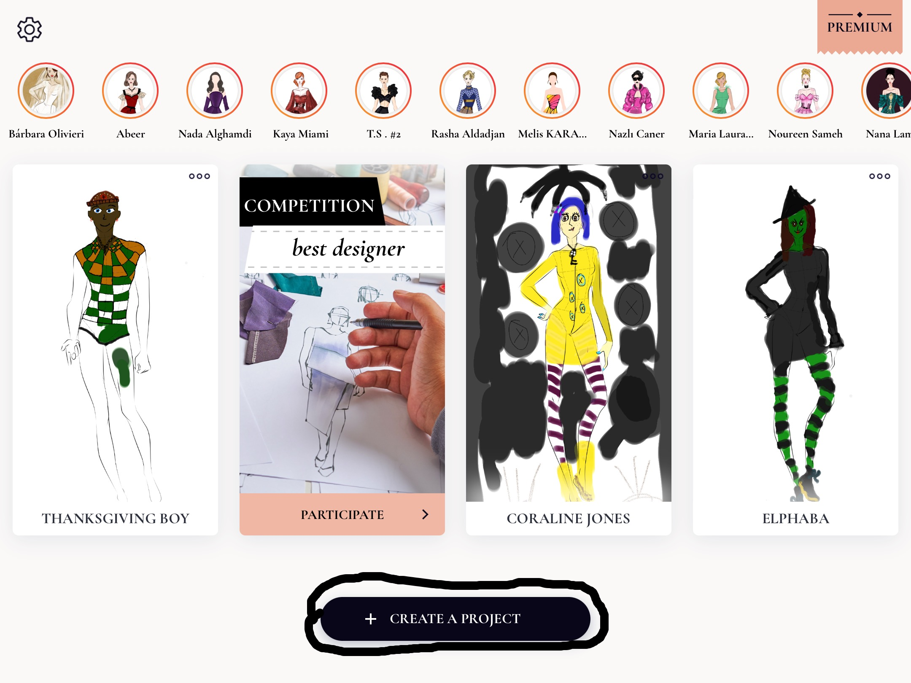
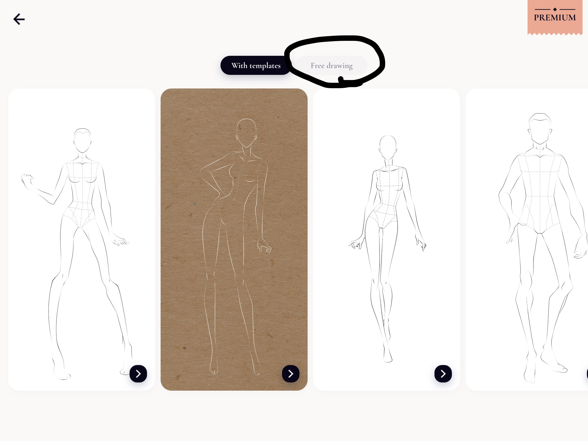
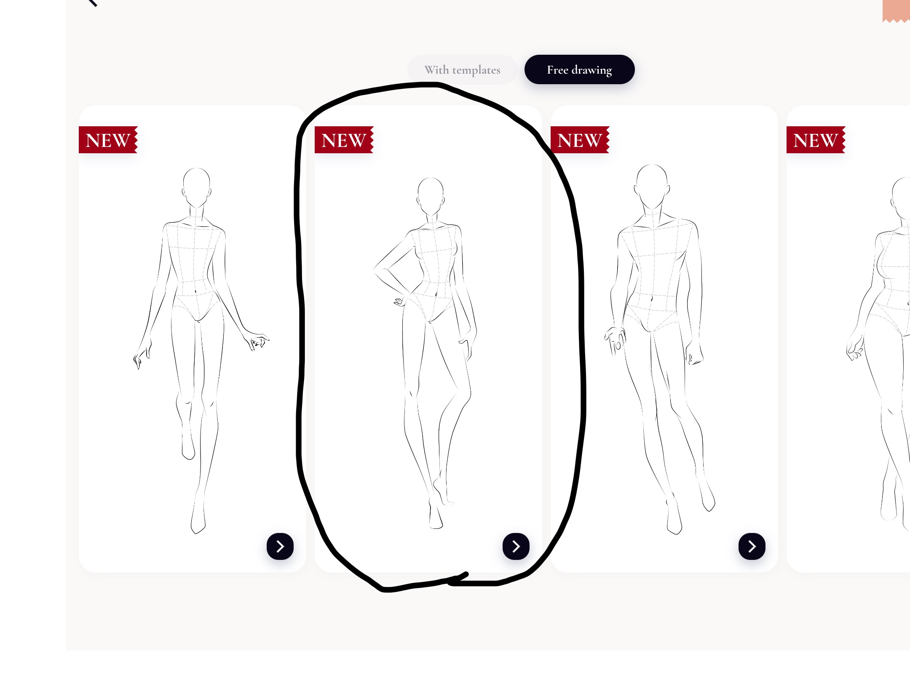
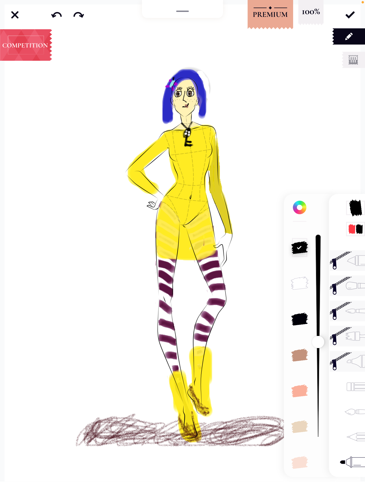
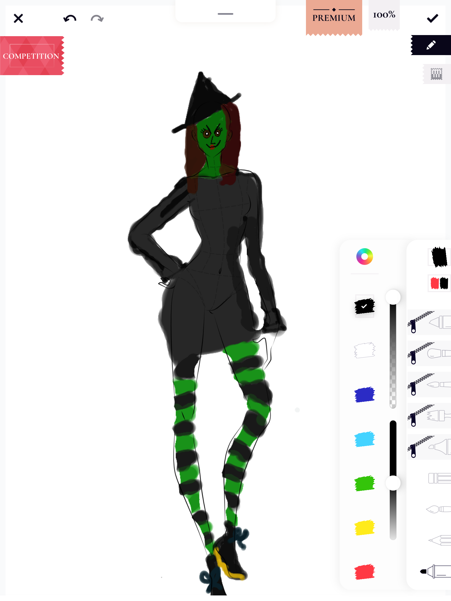
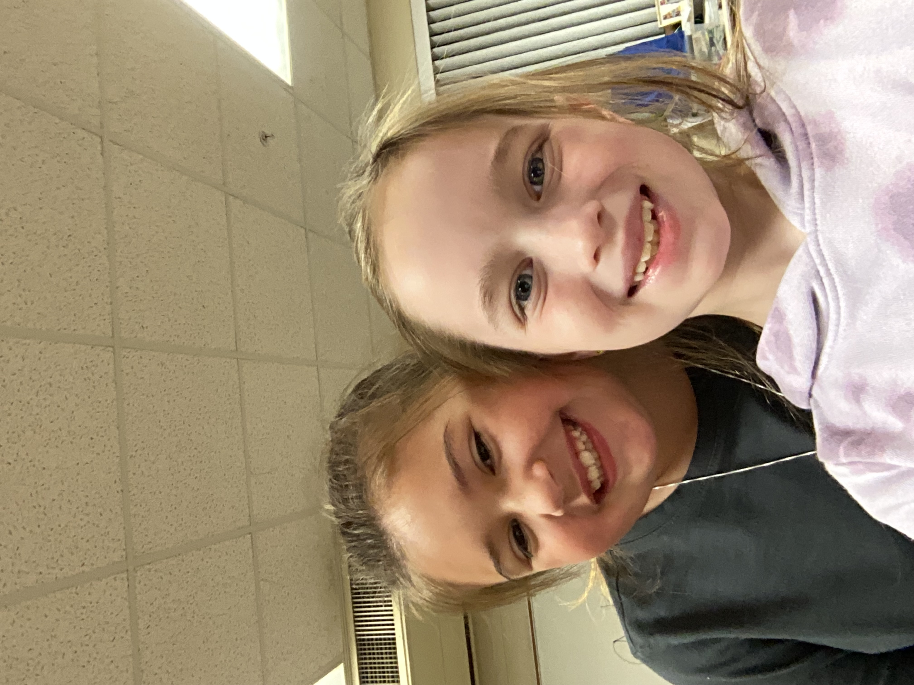

<ui:composition xmlns="http://www.w3.org/1999/xhtml"
	xmlns:f="http://java.sun.com/jsf/core"
	xmlns:h="http://java.sun.com/jsf/html"
	xmlns:p="http://primefaces.org/ui"
	xmlns:ui="http://java.sun.com/jsf/facelets"
	template="../WEB-INF/templates/master.xhtml">

	<ui:define name="content">

	<style>
		img {
  			display: block;
  			margin-left: auto;
  			margin-right: auto;
		}

		.fixed-size-img {
      			width: 300px;
     			height: 500px;
    		}
	.fixed-size-img1 {
      			width: 500px;
     			height: 300px;
    		}

.centered {
 	   text-align: center;
	}
.red {
        color: red;
    }
.bold{
      font-weight: bold;
    }

		table {
      			border-collapse: separate;
      			border-spacing: 10px;
    		}

    		td {
      			padding: 10px;
    		}

		.font {
  		font-family: Arial , sans-serif;
		}
 li {
  		font-family: Arial , sans-serif;
		}
	</style>
<h1 class="centered"> Fashion Design Sketches </h1>
  <p class="centered bold red" >
To view our video tutorial, go to this
 <a href="https://www.youtube.com/watch?v=w6QbQwXJDfw" target="_blank">link</a>
</p>
<p class="font">
This app is a fashoin design app, where you can make an outfit on a model👗! You can use 
all kinds of colors and make a picture out of it. If you want to add acccessories use the📿pencil tool for small detail. For coloring big areas like a dress 👗or a shirt👚 use the marker tool. You can even draw over the model and add things like makeup💄 and jewelry📿. 
</p class="font">
<p>
<p class="font">
This app is so much fun because you can take pictures of your models to send to your friends👫 and family👨‍👩‍👧‍👦. You also can do things like make costumes! 
<p/>
<p>
<ol>
<p class="font">
Steps:
<li> Download the app "fashoin sketches" on the app store.</li>

<li>❌out of the ad for premium </li>

<li> Tap "add new project" </li>

<li> Click "free draw" </li>

<li> Choose a model </li>

<li> Start drawing! </li>


</p class="font">
</ol>
<p/>
<p class="font">
Tips and Tricks:
</p class="font">
<li> to switch the size of the tip click into the tool on the side and you can change 
it </li>
<li>if you mess up you can press the ↩️ </li>
<li>if you accidentally delete something press ↪️ </li>
<p>
<ol>
<p class="font">
How to make a fake apple pen 🖊
</p class="font">
<li>Remove the ink from the pen </li>
<li> Cut about 1/4 of the cotton swab off </li>
<li> Stuff the swab up the tip of the pen </li>
<li> Secure it with tape </li>
<li> Now wrap aluminum foil around the bottom half of the pen</li>
<li> Get the cotton tip wet and enjoy </li>
</ol>
<p/>
<p>
<p class="font">
All about Lucy:
(right) Hey, I'm Lucy and I'm 10 years old! When I grow up I want to be an actress on Broadway and an American Sign Laungage interpreter at NASA! My favorite aniamal is a panda. I have done robotics since 3rd grade! Thank you for checking out our website!
<p>
<p class="font">

All about Camryn: (left)
Hi, my name is Camryn and I'm 8 and I am in 3rd grade. My favorite color is blue. My favorite food is a cheeseburger.My favorite animal is penguins.  Thanks for reading!
</p class="font">
</p>
</ui:define>
</ui:composition>


